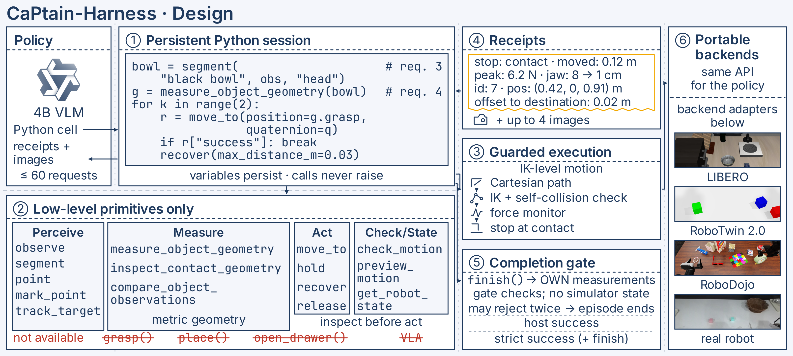
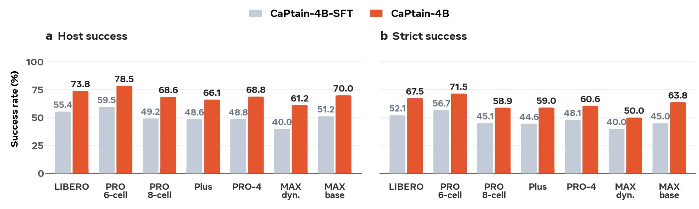
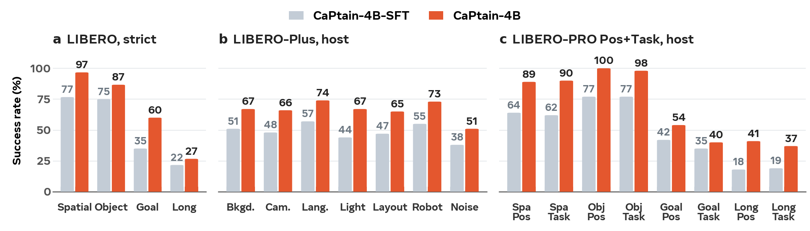
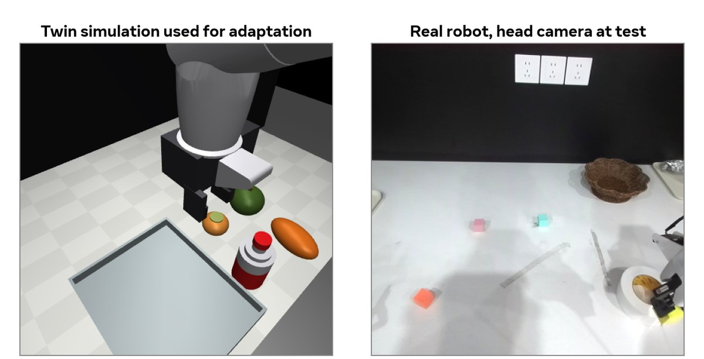

CaPtain: A Pipeline for Post-Training Code-as-Policy Robot Agents
Abstract
Code-as-policy (CaP) agents control robots by writing programs over perception and motion APIs, and generalize beyond other robot policy architectures. Their wide adoption has been difficult for two reasons. First, the strongest CaP agents are built on closed frontier models, which cannot be retrained or deployed locally. Second, prior work has not shown how to post-train small open models, which fail zero-shot, into capable CaP agents.
We present CaPtain, an open pipeline that post-trains a small open vision-language model into a CaP agent in three steps. First, CaPtain-Harness exposes only low-level perception and motion primitives, with no high-level skills, shared by simulation and real robots. Second, supervised fine-tuning (SFT) on synthetic agent trajectories collected in this harness (generated with GPT-6 Astra) provides a cold start. Third, reinforcement learning (RL) tackles the hardest part, credit assignment over long embodied episodes whose success is observed only at the end. A small critic reads the simulator's physical state, such as object poses, grasp state and sub-goal progress, and turns the change in its predicted success across each request into that request's credit, while the policy does not see this state.
Applied to Qwen3.5-4B, which scores 0% zero-shot, the pipeline raises held-out LIBERO success to 55.4% after SFT and 73.8% after RL, and the gain persists on three perturbation suites (+17.6 to +21.2 points). On LIBERO-PRO, the resulting CaPtain-4B reaches 78.5, the best result we know of among systems without a frontier model or a LIBERO-trained VLA at test time. The agent also transfers zero-shot to the new scenes and tasks of RoboTwin 2.0 and to the new embodiments of RoboDojo and SimplerEnv (83.3% on WidowX); the pipeline extends to a real robot without any real-world training data, completing tasks with new objects and layouts. We release CaPtain-Harness, the SFT data, the training code and the CaPtain-4B weights.



Every action is a line of code
CaPtain-4B acts only by writing Python against a low-level API. Press play: the panel shows the cell the agent wrote at that moment, its short reasoning, and the receipts the harness returned. Click any tick to jump to a request.
Successful episodes across benchmarks
Successful episodes of the RL-trained policy in the four LIBERO suites (official held-out initial states), under the LIBERO-PRO, LIBERO-Plus and LIBERO-MAX perturbations, on RoboTwin 2.0 and RoboDojo without any training on them, and on a real arm. Clips play when they scroll into view; thinking time is cut and motion is sped up (LIBERO-family replays 6× simulated time, real robot 2×; RoboTwin and RoboDojo clips are the camera frames the agent requested).
RL gains survive perturbation
We train only on the 40 original LIBERO tasks. The perturbations of these suites never appear in training. Paired episodes, exact McNemar tests.
Where CaPtain-4B stands
Sort by any column, filter by policy family or by whether a frontier model is queried while the robot acts. Superscripts mark protocol differences; hover them for details.


Three steps from a 4B VLM to a robot agent
Each step answers one question: which actions the agent may call, how a model that fails zero-shot gets a working start, and how credit reaches the right request in a long episode whose success is observed only at the end.
CaPtain-Harness
A ReAct loop in which actions are code. The only tool is a persistent, sandboxed Python session with a pre-imported robot module.
- 22 low-level capabilities: perception, geometric measurement, IK-level motion. No grasp, place or open-drawer skills and no VLA.
- Robot calls do not raise exceptions; each returns a text receipt of what physically happened.
- A completion gate checks the agent's own measurements before
finish(). - The policy-facing API is unchanged across LIBERO, RoboTwin 2.0, RoboDojo, CaP-Bench and a real robot; backend adapters sit below it.
SFT cold start
Supervised fine-tuning on synthetic agent trajectories collected in the harness itself, rendered with the exact chat template, TASK.md, tool schema and receipts the policy later sees.
- Only agent tokens are supervised, reasoning as well as code; harness outputs are context.
- Forcing the model to look: earlier pixel coordinates in the history are masked with probability 0.2, so new calls must be grounded in the current image.
- All language-model weights are trained; the vision tower is frozen.
RL with a simulator critic
A small critic reads 36 privileged features of the simulator state (end-effector and jaw, goal bookkeeping, distances, lift, articulated joints, held flags) and predicts success. The change in its prediction across a request is that request's credit.
- Ensemble of five small MLPs, co-trained online with the policy.
- The critic is used only in training and removed at test time.
- Returns separate deployable outcomes: 1 for success with
finish(), −0.3 for a false finish.
The critic turns physics into per-request credit
Per-request credit
For request t of an episode, the temporal-difference credit is the change in predicted success it causes, plus its small cost:
Both values use the same index t, so the passage of time alone produces no credit. Perception requests still get credit through GAE (λ = 0.9) from the physical actions they enable, and a group-relative outcome term ranks the G = 4 rollouts from the same start.
AUC, ΔV and advantage-mass statistics are from offline studies on an earlier 9B policy (15k episodes, 573k request states).
Same API, real arm, no real-world training data
The simulator is replaced by a hardware backend for an XR1 arm with a head RGB-D camera, a wrist camera, a kinematic twin updated from the measured joints, and safety guards. The policy-facing API and receipts are unchanged.

The XR1 arm differs from the simulated Panda in kinematics, reach, gripper geometry and camera placement. We therefore use a checkpoint fine-tuned on episodes from a coarse twin simulation of the XR1, which teaches the policy the conventions of the new embodiment. The twin uses primitive objects and untextured surfaces and does not reconstruct the real scene.
The policy is adapted with simulated XR1 episodes only and uses no real-world data. Both tasks below use new objects and layouts, and are completed with the same low-level primitives used in simulation. The second requires reasoning about the instruction: the cube with the colour of the sky is the light-blue one, and the container that is not round is the rectangular tray.
(a) “Put the yellow cube in the wooden tray.”
- 1–5
observe, click cube and tray,segment+select_detection; first binding rejected, re-click; cube 3.0 cm tall - 6–8Inspect contact geometry, move 11 cm above the cube, descend at 2.5 cm/s
- 9–10Close (open fraction 1.00 → 0.33), lift 11.5 cm: cube rises with the gripper
- 11–18Carry 12 cm over the tray; stale query rejected, occluded masks judged unreliable; raise 6 cm and re-measure the held cube
- 19–21Lower to 1 cm above the tray floor, open, retreat 17 cm
- 22–23Fresh measurement: centre inside the tray footprint, offset (2.0, −2.1) cm →
finish()accepted
(b) “Put the cube that has the color of the sky into the container that is not round.”
- 1–3Reasoning: the pale-blue cube matches the sky; the brown tray is rectangular and the white bowl is round, so it is excluded. Measure cube (3.4 × 3.5 cm)
- 4–7Approach and guarded descent stop 4 mm above target with no force; re-select (stale detection rejected), close, lift 7 cm
- 8–14Occluded masks of the held cube rejected; raise 10 cm more, move above the tray centre
- 15–16Lower towards the tray floor (stalls 1 cm above, no force), open, retreat 15 cm
- 17–29Several tray masks rejected; final: centre inside footprint and volume, offset (−1.4, 3.6) cm →
finish()accepted
Everything you need to post-train your own
A local 4B model and a low-level API: no frontier model and no VLA skill at test time.
CaPtain-Harness
Environment-agnostic harness with 22 low-level capabilities, receipts and a completion gate; backends for LIBERO, RoboTwin 2.0, RoboDojo and CaP-Bench.
Training code
SFT and asynchronous RL with the simulator critic, per-request credit and gradient accumulation.
CaPtain-4B
The RL policy (Qwen3.5-4B) behind the reported benchmark results.
CaPtain-4B-SFT
The cold-start checkpoint after Stage 1; initializes RL and serves as the KL reference.
SFT data
Synthetic agent trajectories collected in CaPtain-Harness, in the exact format the policy sees.
BibTeX
@article{fan2026captain,
title = {CaPtain: A Pipeline for Post-Training Code-as-Policy Robot Agents},
author = {Fan, Yijia and He, Xilin and Jiang, Yilei and Wu, Dongming and Wang, Jiaxu and Yue, Xiangyu},
journal = {arXiv preprint},
year = {2026}
}